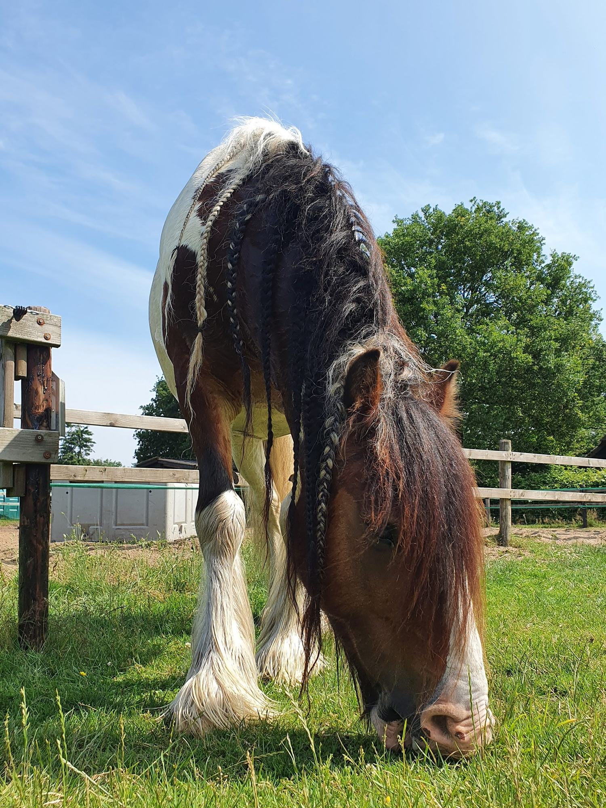
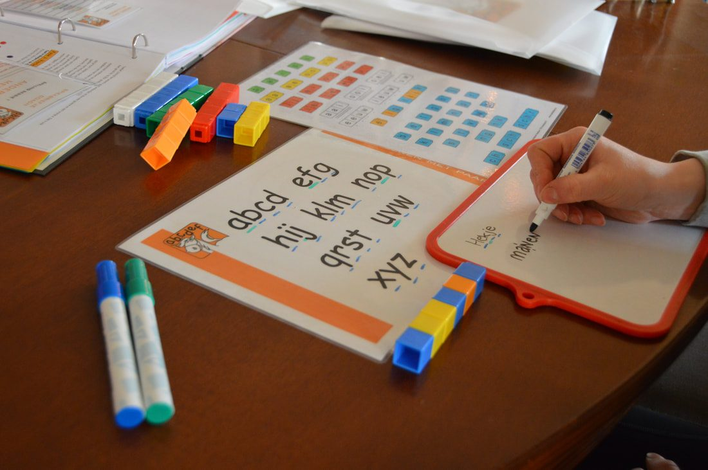
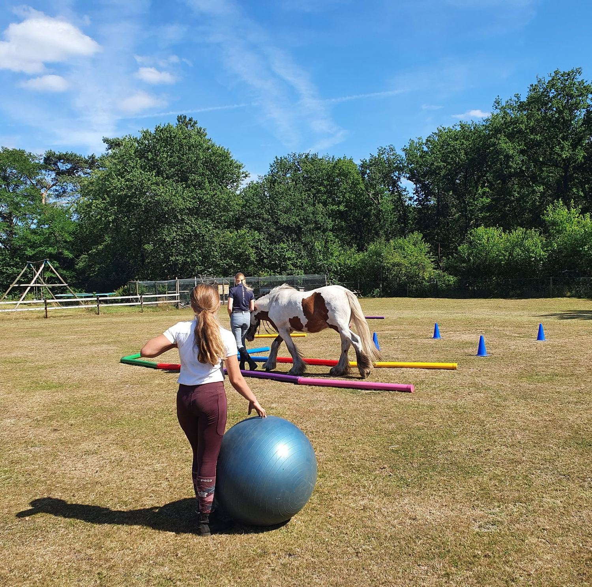

★★★★★
"Bedankt voor je fijne begeleiding van Lisa. Ze is enorm gegroeid, mede dankzij de coaching van jou en Bruno."
Paarden reageren puur op wie u bent, niet op wat u zegt. Dat maakt paardencoaching zo krachtig — voor kinderen, jongeren én volwassenen.
Paarden voelen wat u voelt — vaak nog voordat u het zelf doorheeft.
Paarden zijn van nature vluchtdieren. Daardoor zijn ze de hele dag bewust van hun omgeving en pikken zij energie op die wij vaak niet eens zelf voelen. Ze reageren puur en zonder oordeel op wie u op dat moment écht bent.
Daarnaast zijn paarden kuddedieren. In een kudde reageren zij op het lid dat het meest hulp nodig heeft. Dat principe gebruiken wij in een coachingsessie: het paard kiest waar de aandacht naartoe moet.
Bijzonder is dat paarden geen onderscheid maken tussen mens en dier. Voor hen telt alleen wat zij voelen en zien — eerlijke, directe feedback zonder enig oordeel.
In de sessies werken wij met bewezen technieken: ACT (Acceptance and Commitment Therapy) helpt u om in contact te komen met wat écht belangrijk is, en mindfulness brengt u terug naar het hier en nu. Samen met het paard ontstaat zo een krachtige, lichaamsgerichte ervaring.

Janneke heeft de volgende opleidingen tot paardencoach gevolgd:
Naast individuele paardencoaching bieden wij twee specifieke programma's voor kinderen die op school of in het leven vastlopen.

Voor kinderen van groep 3 t/m de brugklas die vastlopen op school — door dyslexie, dyscalculie, ADHD, faalangst of een andere leerstijl.
Lees meer over ALMP
Voor kinderen die (tijdelijk) thuis zitten en buiten, in beweging en met de paarden, weer kunnen opladen en groeien.
Lees meer over De Buitenklas